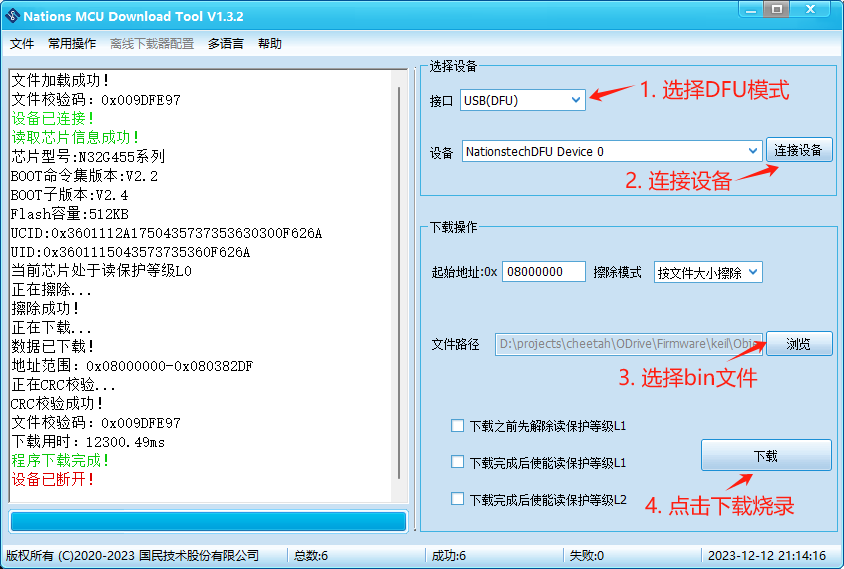
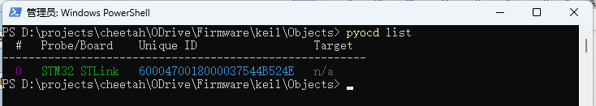
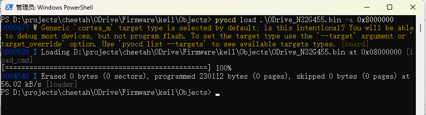

Traducción de la sección 3.2 del manual GIM6010-8 rev 2.2 (págs. 39–40 del original).
El firmware puede grabarse por la interfaz SWD (apartado 2.4.4) o por el conector Type-C (apartado 2.4.2). Se ofrecen las tres vías siguientes.
Tenga en cuenta que el software de Nations puede grabar tanto por el conector Type-C como por la interfaz SWD (solo con JLink y DAP); este apartado toma como ejemplo la grabación por Type-C.
Primero, descargue el driver USB del software de grabación de Nations (https://www.cyberbeast.cn/filedownload/789489) e instale el correspondiente a su sistema. Después descargue el propio software (https://cyberbeast.cn/filedownload/766844), descomprímalo en cualquier carpeta y ejecútelo.
A continuación conecte el cable Type-C, entre en odrivetool y ejecute el comando siguiente para poner el driver en modo DFU:
odrv0.enter_dfu_mode()
Por último, grabe el firmware con el software de Nations, como muestra la figura. Cuando termine la grabación, pulse «常用操作» (operaciones habituales) y después «复位» (reset) para reiniciar el driver y poder conectarse de nuevo con odrivetool.

La descarga por SWD es similar a la del modo DFU, pero la conexión se hace por la interfaz SWD de depuración (apartado 2.4.4) y en la pantalla anterior hay que seleccionar la herramienta de depuración correspondiente (JLink o DAP).
pyocd es la versión en Python de OpenOCD y admite herramientas de depuración habituales como STLink, JLink o DAP para borrar, grabar, reiniciar, etc. Tenga en cuenta que la conexión con el driver debe hacerse por la interfaz SWD; el orden de los pines SWD se indica en el apartado 2.4.4.
pip install pyocd
Primero, liste las herramientas de depuración conectadas:
pyocd list

pyocd list: se detecta una sonda STM32 STLink.Después, ejecute el comando siguiente para grabar el archivo .bin:
pyocd load .\ODrive_N32G455.bin -a 0x8000000

pyocd load tras grabar correctamente el firmware.